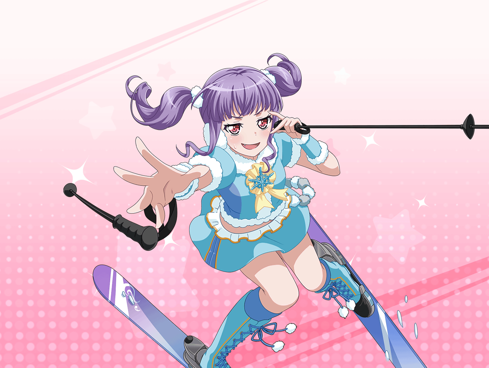

ゲレンデ 雪遊び広場
日菜
あ、あこちゃん見てみて！
あこ
どしたの、ひなちん！
日菜
そこでソリが借りられるみたいだよ？
あこ
ホントだ！ あこ、ソリしたい！
日菜
いいね！ あたしも一緒にやろーっと！
あこ
準備オッケー！ いっくよーっ！
日菜
ひゃっほー！
美咲
２人とも、何してんの？
日菜
あ、美咲ちゃん。見ての通りソリだけど？
美咲
いやそれはわかりますけど……
あこ
一緒にやる！？
美咲
あ、あたしはいいや……
あこ
そっかー……あ、そういえば子供のとき、
おねーちゃんと一緒にこうやってソリしたんだ！
美咲
へえ……巴さんってスポーツとかできそうだから、
ソリよりもスキーとかやりそうだけど
あこ
うん、おねーちゃんはスノボできたんだけど、
あこが小さかったから一緒に遊んでくれたの
美咲
なるほどね、日菜さんもお姉さんがいますけど、
こうやって遊んだりはしないんですか？
日菜
小さい頃は遊んだりもしたかな。
最近はあんまりだけど。
おねーちゃんとこうやってソリで遊んだら楽しそうかも！
美咲
あこも日菜さんも、お姉さんのこと好きそうですよね
日菜
うん、大好きだよ！
あこ
あこもおねーちゃんのこと大好き！
美咲
そういうの、なんかいいですね
あこ
おねーちゃん、今何してるのかなー？
美咲
自撮りでも送ってみたら？
あこ・日菜
それいい！
あこ
せっかくだし、3人で撮ろうよっ
日菜
あたしも撮りたーい！
美咲
あたしは……まぁいいか
あこ
いくよー！
あこ
これを送信っと……送った！
日菜
あたしも送ったよー！
あこ
あ、返事返ってきたっ！
日菜
あたしもー！
美咲
いや、早すぎでしょ……
あこ
え〜っと……『おっ楽しそうだな〜、コケて泣いてないか？』
だって。泣くわけないじゃんっ！
日菜
うちのおねーちゃんは、
『周りの人に迷惑をかけないように』だって。
なんか冷たいなー
美咲
いや……２人らしい返答だと思いますよ……